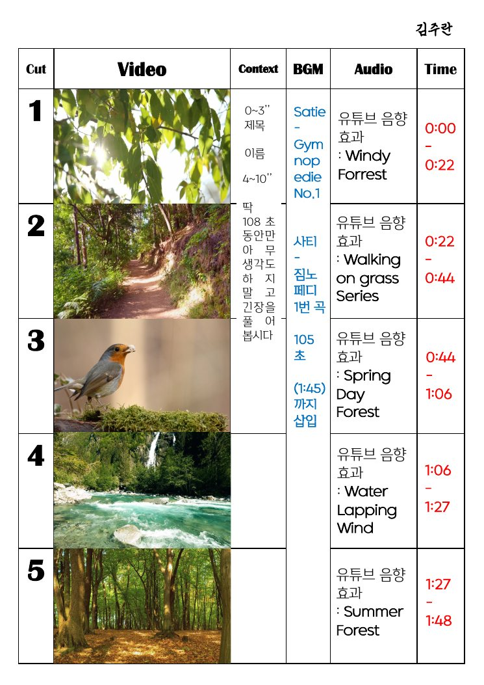

2022 · 영상 · 사운드 디자인
108초 명상 영상
서울국제명상엑스포 ‘108초 명상 영상’ 공모전 출품을 목표로 명상 영상 3편을 기획·제작했습니다.

뉴미디어음악과공연예술 캡스톤디자인 1에서 팀 ‘명톨릭’으로 진행했습니다. 일상 속 명상 같은 순간을 담은 1인칭 브이로그, 강아지 요가 브이로그, 숲·계곡의 입체 음향을 살린 ASMR까지 세 편을 기획했습니다.
내 작업 · 숲 산책 영상의 컷별 스토리보드와 사운드 설계를 맡아, 사티 ‘짐노페디 1번’ 위에 바람·풀숲·물소리 효과음을 시간대별로 배치했습니다.